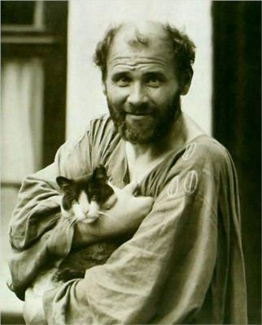
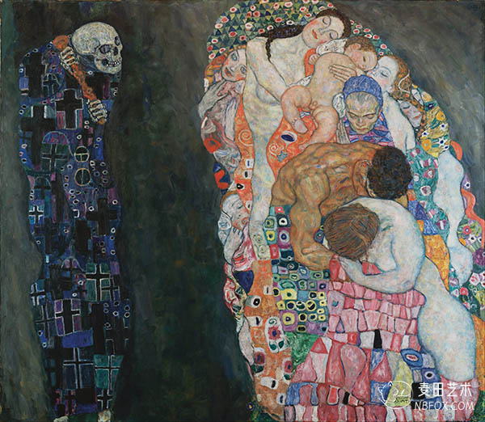
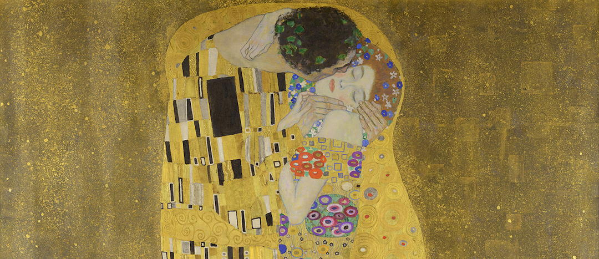
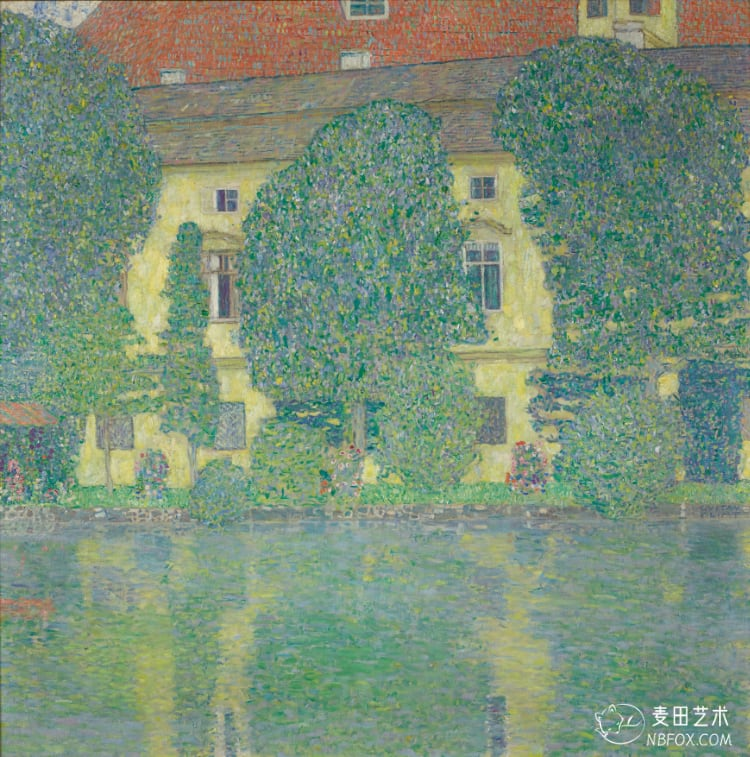

1862 年，维也纳郊外的鲍姆加登，一个金匠雕版工家里生了七个孩子，古斯塔夫·克林姆特排行第二。父亲恩斯特·克林姆特是个穷金雕匠，一辈子在铜版上刻出细密的纹样，给别人的项链、圣器和勋章做花饰。家里挤、钱少、味道是刻刀和金粉的。克林姆特的童年没有风景，只有图案——那种一毫米一毫米抠出来的、永不厌倦繁复的装饰性。后来全世界惊叹他画里的金子从哪儿来，答案其实早就放在工坊里：那是父亲的职业，长在了他的手上。
十四岁他考进维也纳艺术工商学校，凭奖金读书，弟弟恩斯特也跟着进来。兄弟俩加上同学马奇，接活儿画剧院天顶，画得又快又漂亮——1888 年，二十六岁的克林姆特因为布达佩斯剧院和城堡剧院的天顶画，从皇帝弗兰茨·约瑟夫手里领了金质勋章。帝国把他当自己人：体面的、镶金的、遵纪守法的宫廷画师。那几年的画有多规矩，后来的画就有多放肆。

1892 年，命运同时收走两个男人：七月父亲中风去世，十二月弟弟恩斯特死于阑尾炎后腹膜炎——三十岁不到。克林姆特从崩溃里走出来时，那个领勋章的宫廷画师已经死了。此后他不再接任何官方壁画，不再隶属任何学院，也不再解释自己的画。他没有写日记，没有留下理论，别人问画是什么意思，他的回答后来刻在维也纳的墙上："谁想了解我，就去研究我的画——去看，去尝试理解我画了什么、我想做什么。"
他很快找到了让他永远沉默的那个战场。1894 年，大学委托他为天顶画三幅寓言：《哲学》《医学》《法学》。他画了七年，交出来的东西让整个帝国炸了锅——87 位教授联名抗议，报纸骂他"色情"、"癫狂"，国会议员要求彻查，教育部最终拒绝挂出这三幅画。克林姆特要回了定金，头也不回。这场"大学天花板之战"是他性格成型的关键一战：从此他只为自己作画，只为愿意直视的人作画。1900 年代初，他牵头成立"维也纳分离派"，把口号写进门楣——为时代以它的艺术，为艺术以它的自由。
为时代以它的艺术——但维也纳的时代是什么？是弗洛伊德开始解剖梦的城市，是一个外表镀金、内里溃烂的帝国。克林姆特把这一切看在眼里，画出来的全是同一个主题的两面：色情与死亡，拥抱与吞噬。《死亡与生命》里，骷髅抱着整整一塔人堆——婴儿、少女、老妇、壮汉，人类堆在一起笑着取暖，而死亡就贴在旁边等。这不是病态趣味，这是他半生看下来的真相：帝国的金冠之下，所有人都在排队走向同一个骷髅。

1903 年他去了一次意大利，在拉文纳的圣维塔莱教堂，站在拜占庭的黄金马赛克前挪不动步。1400 年前的工匠用一平方厘米几十块金箔玻璃，拼出让人必须仰头的光。他回来就造了工具——墙上绷一层金色，像父亲当年那样一层层描。父亲的雕金刀、拉文纳的马赛克，在他手里合流。1907 到 1908 年，"黄金时期"的两座高峰先后立起：阿黛尔的肖像，《吻》。

《吻》是全维也纳都在偷偷议论的画：一对跪在悬崖花毯上的恋人，男子的金色长袍布满黑白直线，女子的裙上是圆形花——几何的硬和花朵的软，被同一片金箔焊在一起，脚下就是深渊。帝国骂了他半辈子伤风败俗，最后国家美术馆抢着把这幅画买了下来。而他本人穿着及膝的蓝灰长袍（里面从来不穿内裤，只穿这件画袍过日子），在画室里养猫，一天到晚不出去，只是埋头画。他从不缺女伴——每个夏天带着时装设计师艾米莉·弗洛格一家人去阿特湖避暑，湖边画风景，画里没有一个人，只有水、树和光，安静得不像同一个人画的。

1918 年 1 月，五十五岁，中风。流感跟着来，半个月后他在维也纳病逝，临终最后一句话是喊人去把艾米莉接来。他留下的未完成画室里堆着方案，身后的债务只有一间画室。帝国在当年冬天跟着他散了架——他画的正是它的黄昏。你要问他的金子为什么这样浓，答案有三层：父亲的手艺给他工具，拉文纳给他眼光，而一个不敢直视的时代的伪善，给了他必须用金子遮住、又必须让人看见的东西。